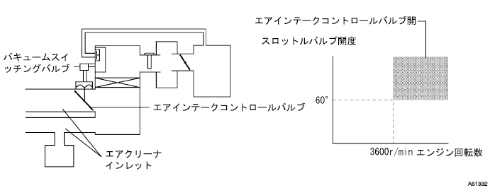
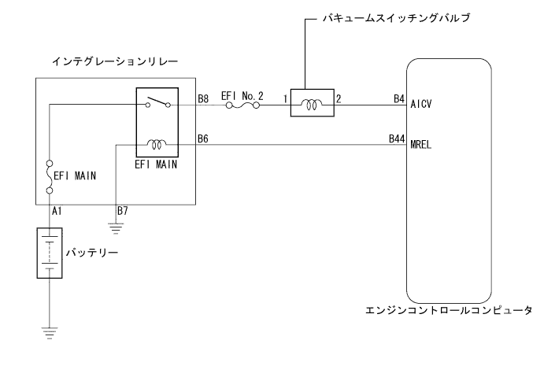
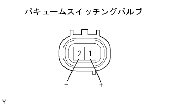
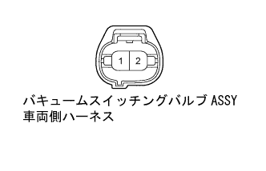
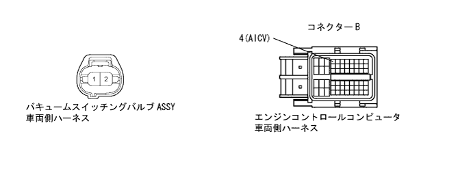

DTC P1660/96 VSV for Intake Air Control (AICV) |

| DTC No. SAE/TCCS | DTC Detection Condition
| Inspection Area |
|---|---|---|
| P1660/96 |
|
|

| Step 1 | Perform TaSCAN Active Test (VSV for Intake Air Control) |
Connect SST (TaSCAN) to DLC3.
With the engine stopped, turn the IG ON.
Following the SST (TaSCAN) screen display, select [Active Test] - [Intake Passage Control VSV].
Operate the VSV (vacuum switching valve) and check whether an operating sound can be heard.
| Result | Proceed to |
|---|---|
| Operating sound cannot be heard | A |
| Operating sound can be heard | B |
|
| ||||
| A | |
| Step 2 | Inspect Vacuum Switching Valve |
 |
Disconnect the vacuum switching valve connector.
Apply battery voltage between the terminals of the vacuum switching valve.
Check that a "click" sound is heard inside the air cleaner assembly.
|
| ||||
| OK | |
| Step 3 | Inspect Wire Harness and Connector (Power Source Voltage) |
 |
ReferenceTurn IG ON.
Using SST (Toyota electrical tester), measure the terminal voltage of the vacuum switching valve vehicle side connector.
| Tester Connection (Terminal Symbol) | Condition | Standard |
|---|---|---|
| 1 (+B) - Body ground | IG ON | 11 to 14V |
|
| ||||
| OK | |
| Step 4 | Inspect Wire Harness and Connector (Vacuum Switching Valve - Engine Control Computer) |
Reference
Disconnect connector B of the engine control computer.
Using SST (Toyota electrical tester), measure the resistance between the terminals. (For Terminals of ECU, see)
| Tester Connection (Terminal Symbol) | Condition | Standard |
|---|---|---|
| B4 (AICV) - 2 terminal | Always | Below 1 Ω |
| Tester Connection (Terminal Symbol) | Condition | Standard |
|---|---|---|
| B4 (AICV) and 2 terminal - Other terminals and body ground | Always | 10k Ω or higher |
|
| ||||
| OK | ||
| ||